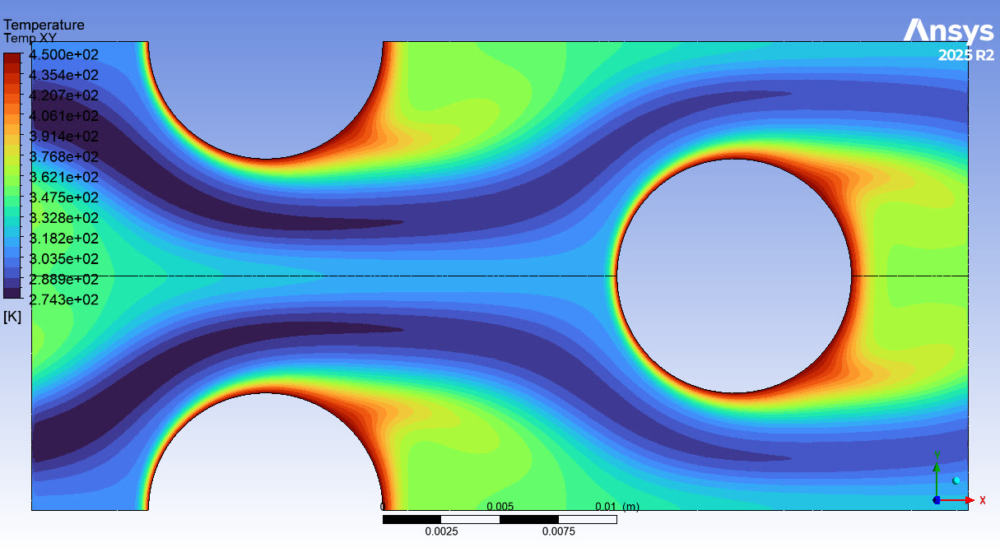

Computational fluid dynamics studies
Nine simulations in Ansys Fluent covering pipe flow, jets, heat exchangers, vortex shedding, multiphase droplets and slurry transport. Each one includes geometry design, meshing, solvers and post-CFD.
View the CFD work